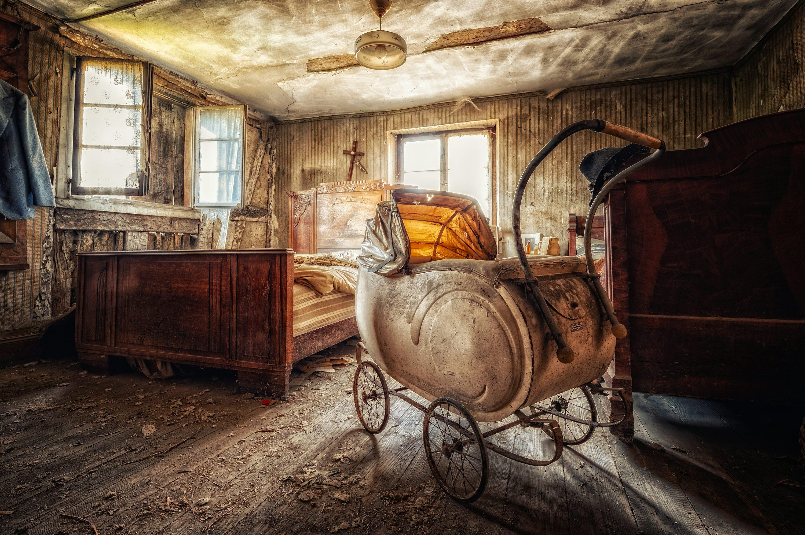
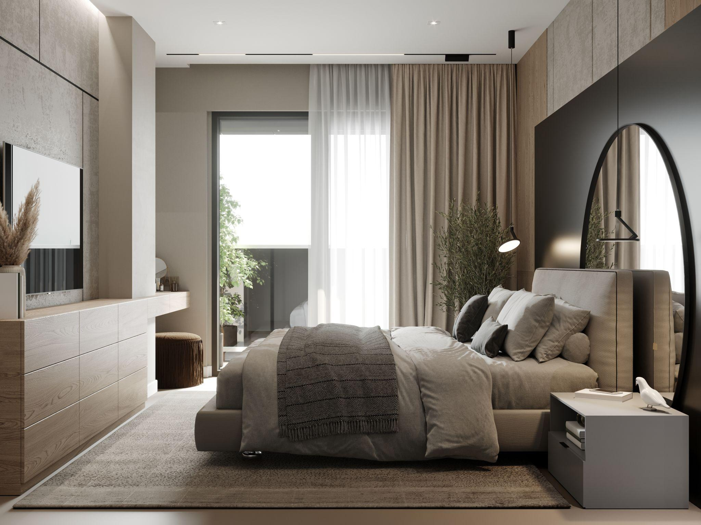
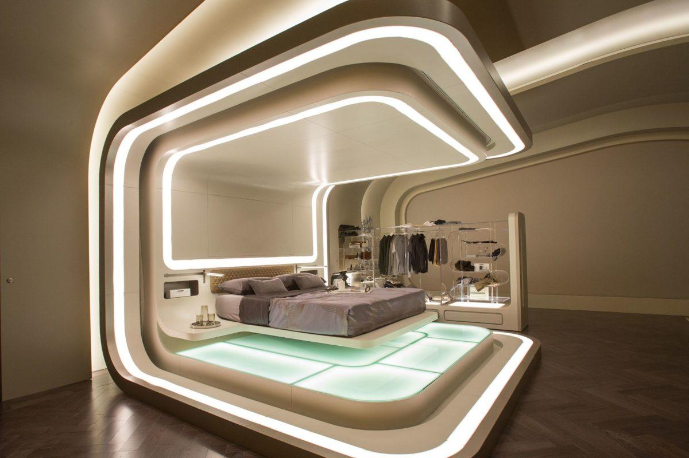

🕰️ The Past Room
Memories stored like artifacts. Every moment still exists emotionally in memory.
Read deeper meaning
The past is preserved as emotional data inside human memory.
Artifact ID: TM-PAST-001

🌿 The Present Room
The only moment we truly own — it disappears while we live it.
Read deeper meaning
The present constantly becomes memory.
Artifact ID: TM-PRES-002

🚀 The Future Room
A space of imagination, uncertainty, and infinite possibilities.
Read deeper meaning
The future exists only as probability and imagination.
Artifact ID: TM-FUT-003
💭 Emotional Time Room
Time is not equal for everyone — it changes with emotions.
Read deeper meaning
Emotion distorts human perception of time.
Artifact ID: TM-EMO-004
🎓 Project Credits
Created by: Fatima Sahili
Instructor: Dr. Nagham Fakih
Special thanks to my instructor for her guidance, support, and inspiration throughout this project.